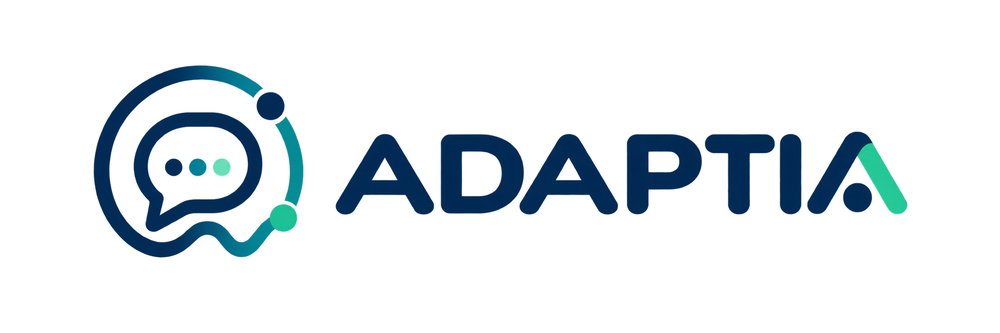
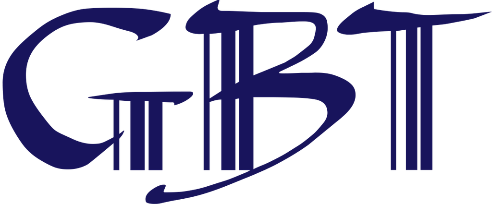
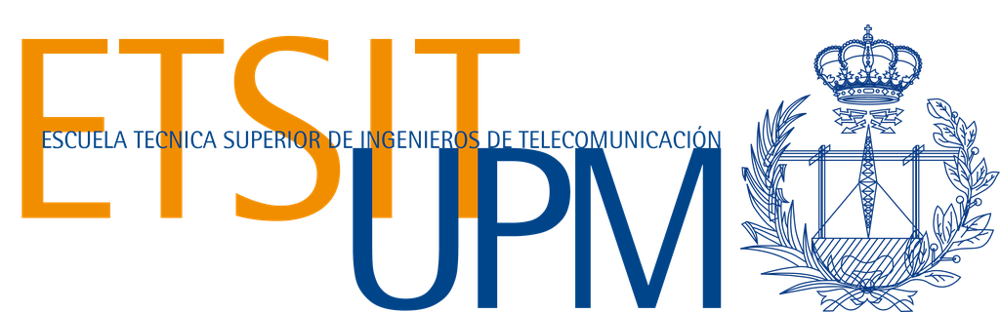
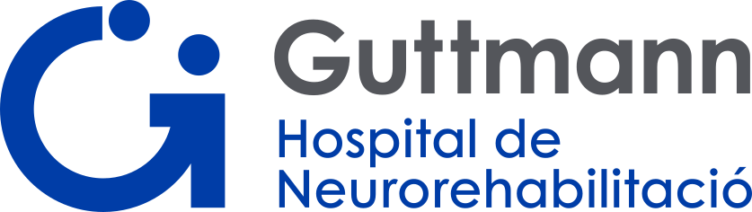
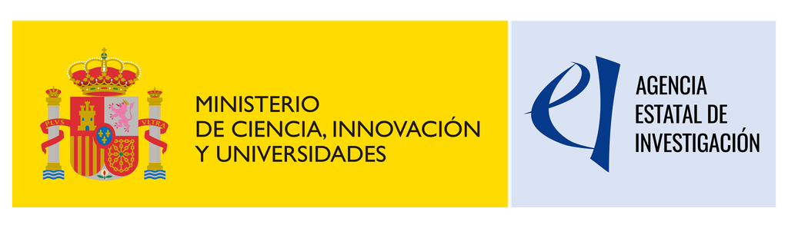

Personalization
Patient profiling, conversational signals, ecological momentary assessment and exploratory wearable markers.

Public draft
Agent-Based Clinical Support for Chronic Pain and Depressive-Anxiety Symptoms via Emotion-Aware and Adaptive Conversational Models
A coordinated research project between GBT-UPM and Institut Guttmann exploring trustworthy multi-agent conversational support, dynamic personalization and clinically supervised adaptive care pathways.
Project
ADAPTIA aims to design, develop and clinically evaluate an adaptive conversational support system for people living with chronic pain and comorbid depressive-anxiety symptoms.
The project combines clinical co-design, emotional-state modelling, digital phenotyping, adaptive micro-interventions, safety-oriented supervision, explainability and open science practices.
Research Focus
Patient profiling, conversational signals, ecological momentary assessment and exploratory wearable markers.
Patient-facing and clinician-facing agents with transparent routing, safety supervision and explainability.
Psychological micro-interventions, tone, emotional journeys and clinical-readiness criteria shaped with expert input.
Assessment of adherence, usability, acceptability, safety and preliminary clinical utility in a supervised study context.
Ethical-by-design processes, privacy preservation, risk monitoring, explainability and auditable change control.
Reproducible methods, documentation, benchmarks and controlled data-management practices aligned with FAIR principles.
Consortium


Leads the technical and scientific-computational components: multi-agent architecture, AI/ML models, emotional modelling, personalization, safety, explainability and reproducibility.

Contributes the clinical and psychological dimension: co-design, protocol development, clinical safety, participant-facing evaluation and interpretation of clinical utility.
Funding
Proyecto PID2025-173512OB-C21 financiado por MICIU/AEI/10.13039/501100011033.

Outputs
Peer-reviewed publications and open-access links will be listed after review for public dissemination.
Public deliverables, reproducible methods and approved dissemination materials will be published when available.
Project news and milestones will appear here once the consortium approves public communication content.